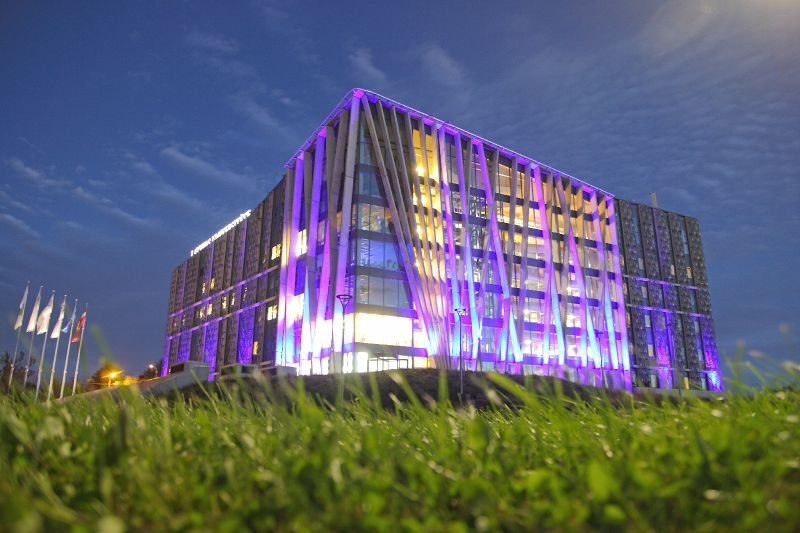
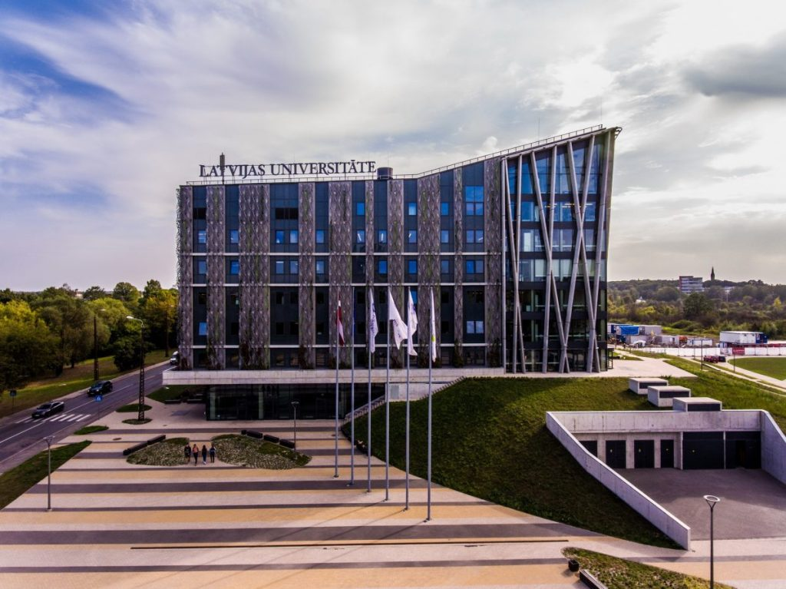
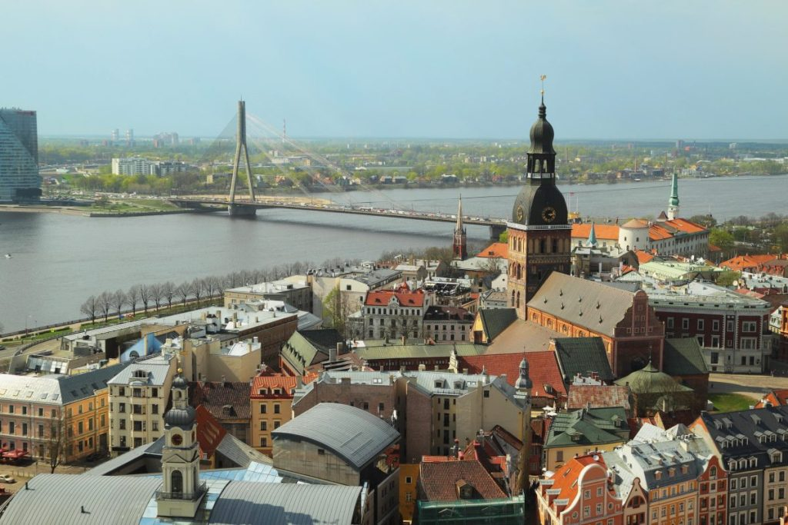
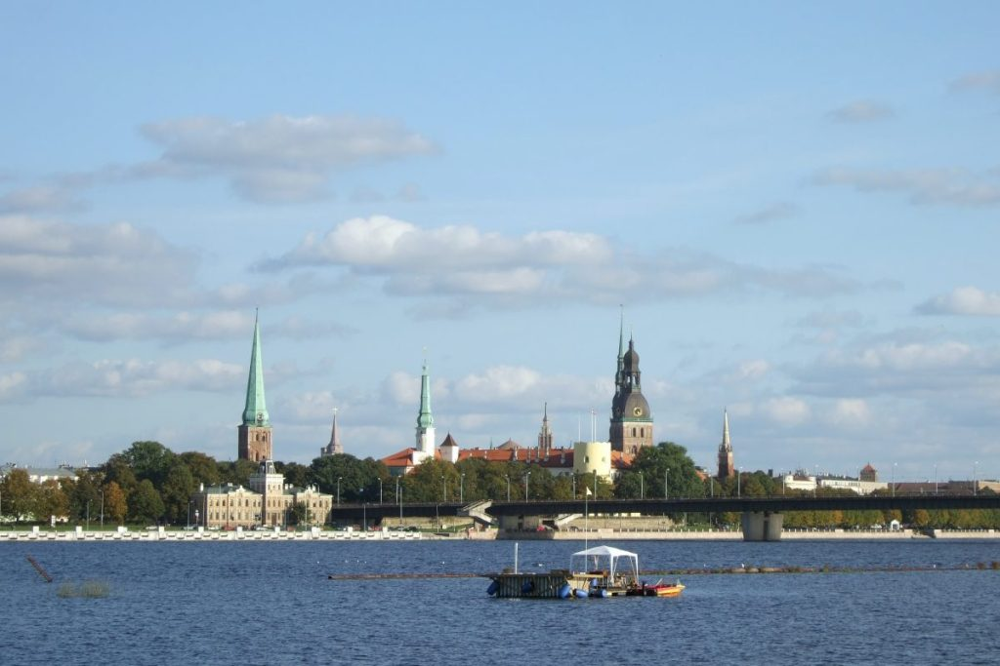

TQC 2020 was planned to take place in the House of Nature – The Academic Centre of University of Latvia.
Because of the ongoing coronavirus situation, TQC 2020 from June 9 to 12 is going to be held online via ZOOM and Slack.
University of Latvia
The University of Latvia with its 15,000 students, 13 faculties and more than 20 research institutes is one of the largest comprehensive and leading research universities in the Baltic States. The University offers more than 130 state-accredited academic and professional study programmes. At University of Latvia, research is conducted in over 50 research fields which represent four main areas of inquiry: the humanities, sciences, social sciences, and education sciences. The University of Latvia pays great attention to the development of international collaboration. At present the University of Latvia has signed more than 500 agreements with 326 institutions in 31 European countries within ERASMUS programme.


Riga
Riga is more than 800 years old. Each century has left its marks in the architecture in the Old Town and City Centre here the cultural heritage coexists with the quick pace of modern living. Architecture of Riga is beauteous and diverse. Heritage of 800 years old Gothic churches, built by founders of Riga, medieval buildings in the Old Town, exquisite Art Nouveau, as well as wooden buildings make Riga a true pearl of architecture. More reasons to visit Riga

